Zanone collar


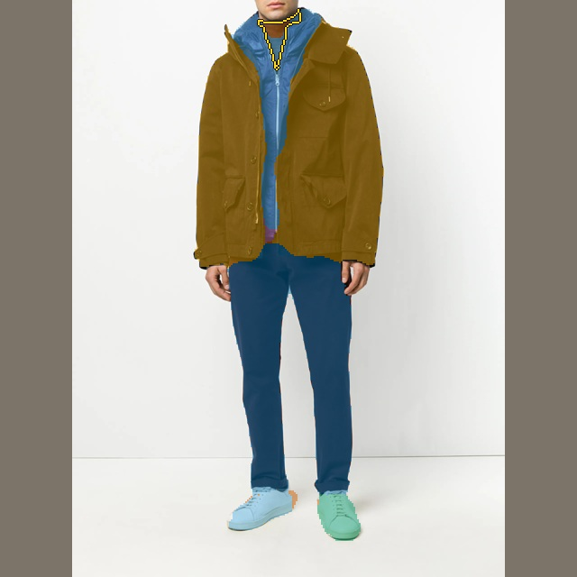
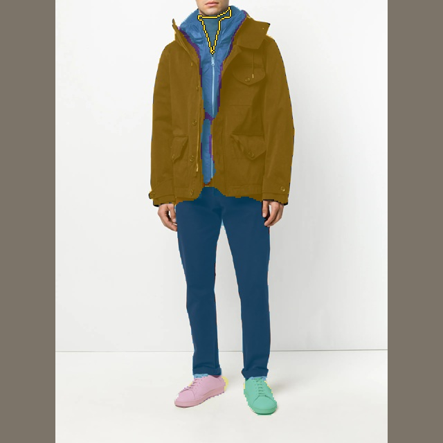
Starting head IoU: 0.233 · Residual · 1,000 (≥0.35) IoU: 0.315 · Selected checkpoint IoU: 0.000


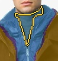
Training finished — quality gates passed
Updated 2026-09-27 03:15 UTC · hard GPU stop Sep 26, 08:56 PM PDT. 18,511 training images / 490 validation images. Named cases remain held out. Automatic SAM3-derived supervision; no human annotations.
The previous corrective run reduced some false seams but damaged already-correct regions. It failed the quality gates and was not promoted. This experiment freezes the complete starting segmenter and trains a separate detector for garment regions it misses, merges or fragments.
The detector follows a DETRDistill-inspired set-matching approach, adapted to masks. It predicts independent masks, whether a correction exists, and estimated mask IoU. Only sufficiently confident proposals can replace baseline labels. This is an adaptation, not a reproduction of the full paper.
Running on RTX 5090: H200 had only 2 MiB free and failed before any optimizer update. Microbatch 4 × 3 accumulation = effective batch 12; original deadline retained.
Initial abstention verified on 35 images: zero changed label pixels. The original 11.80M-parameter head remains frozen; a 1.99M-parameter correction detector is trained separately.
Promotion: none. Quality-pass status is true; checkpoint selection uses validation only. Named cases are for inspection.
Selected head on NVIDIA GeForce RTX 5090: median 9.33 ms, p95 9.90 ms. Cached GPU C-RADIO tokens + RGB to CPU 640px labels. Encoder time is excluded; this is not an end-to-end latency claim.
| Model | PQ ↑ | FG IoU ↑ | Hard recall ↑ | Small easy IoU ↑ | Splits ↓ | Merges ↓ | False seam fraction ↓ | Same-piece agreement ↑ | Cross-piece collision ↓ |
|---|---|---|---|---|---|---|---|---|---|
| Starting head | 0.368 | 0.741 | 0.000 | 0.862 | 1.298 | 1.404 | 0.392 | 0.640 | 0.219 |
| Residual · 5,000 · confidence ≥ 0.15 | 0.396 | 0.755 | 0.108 | 0.783 | 1.745 | 1.329 | 0.336 | 0.713 | 0.174 |
| Residual · 5,000 · confidence ≥ 0.25 | 0.423 | 0.780 | 0.124 | 0.835 | 1.529 | 1.290 | 0.317 | 0.716 | 0.178 |
| Residual · 5,000 · confidence ≥ 0.35 | 0.435 | 0.788 | 0.096 | 0.851 | 1.371 | 1.286 | 0.307 | 0.722 | 0.190 |
| Residual · 5,000 · confidence ≥ 0.50 | 0.443 | 0.803 | 0.060 | 0.880 | 1.218 | 1.259 | 0.313 | 0.721 | 0.207 |
| Residual · 5,000 · confidence ≥ 0.65 | 0.434 | 0.794 | 0.044 | 0.873 | 1.186 | 1.247 | 0.324 | 0.703 | 0.210 |
| Selected · 4,000 updates | 0.439 | 0.795 | 0.068 | 0.878 | 1.233 | 1.263 | 0.313 | 0.732 | 0.202 |
Colors align by one-to-one matching to the reference. Gold outlines identify the requested piece. These images are held out from training and checkpoint selection.


Starting head IoU: 0.233 · Residual · 1,000 (≥0.35) IoU: 0.315 · Selected checkpoint IoU: 0.000



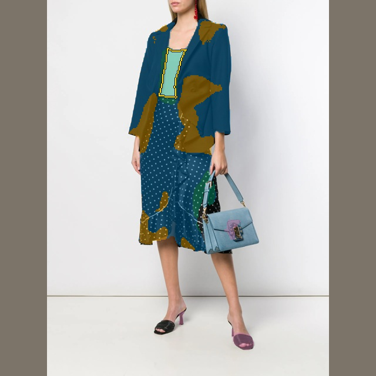
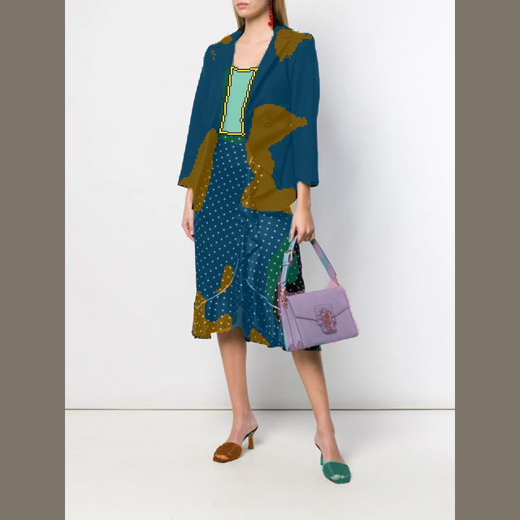
Starting head IoU: 0.489 · Residual · 1,000 (≥0.35) IoU: 0.489 · Selected checkpoint IoU: 0.496


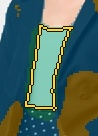


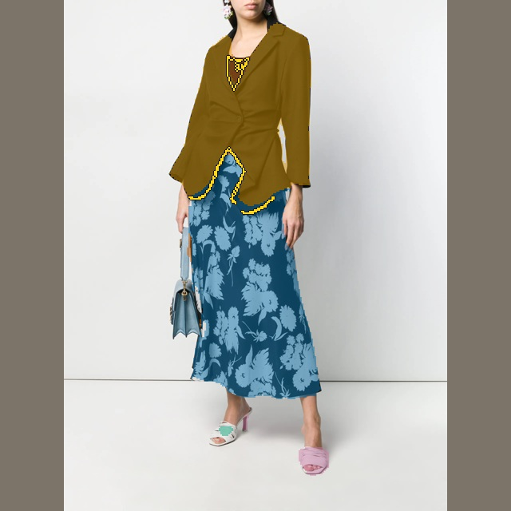
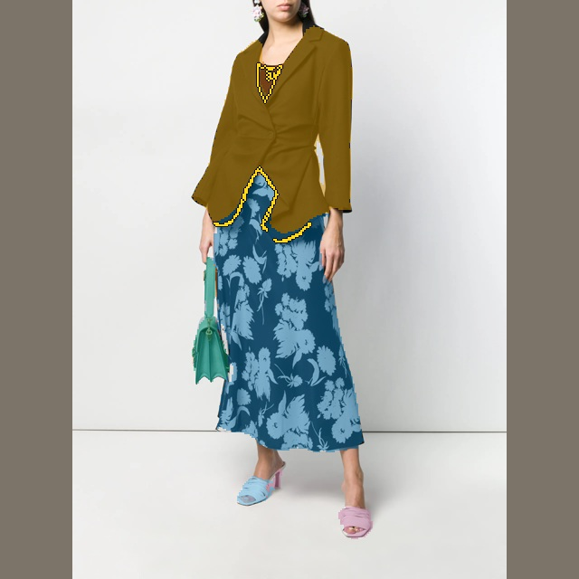
Starting head IoU: 0.282 · Residual · 1,000 (≥0.35) IoU: 0.282 · Selected checkpoint IoU: 0.299


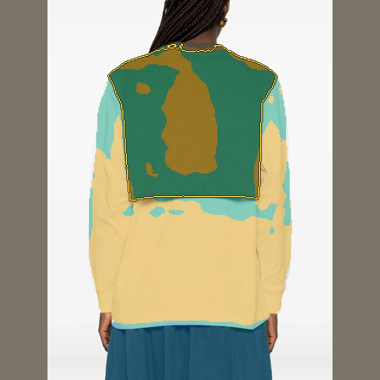

Starting head IoU: 0.553 · Residual · 1,000 (≥0.35) IoU: 0.553 · Selected checkpoint IoU: 0.553


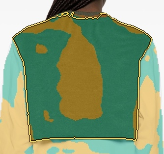

Automatically selected: three largest increases and three largest decreases in mean clothing-region IoU. This is an inspection gallery, not the overall result. All 490 validation images count in the table above. Gold outlines mark the clothing region with the largest relevant change in each image.
Mean clothing IoU change +0.402. Highlighted region: 0.397 → 0.799.
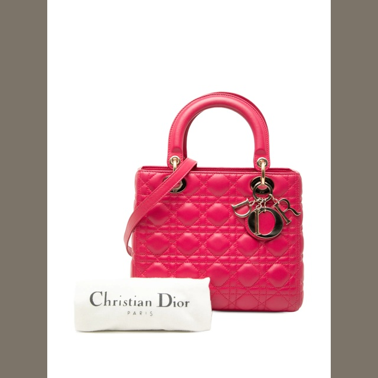
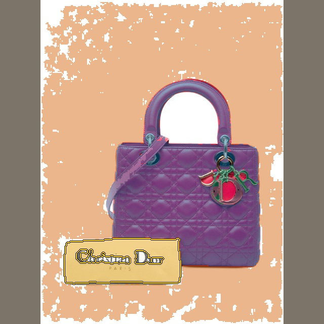
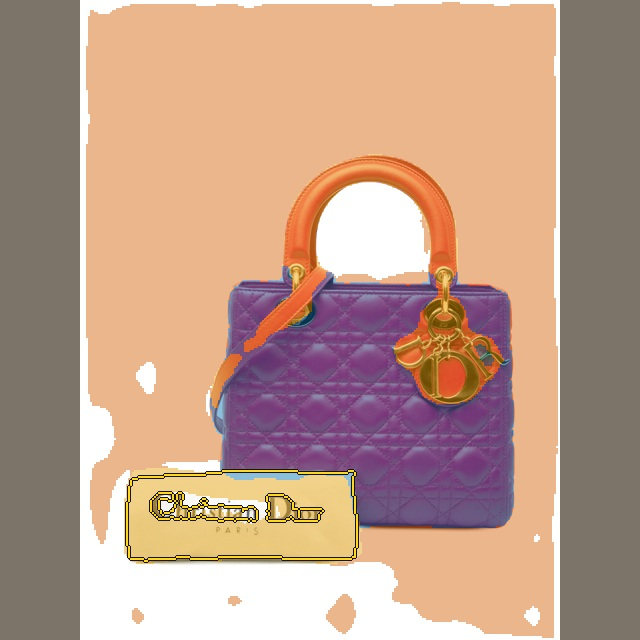
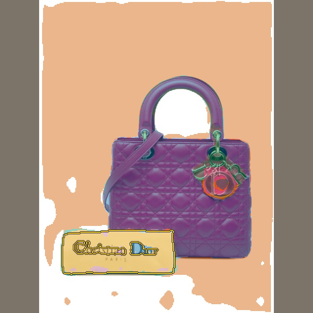
Mean clothing IoU change +0.397. Highlighted region: 0.242 → 0.902.

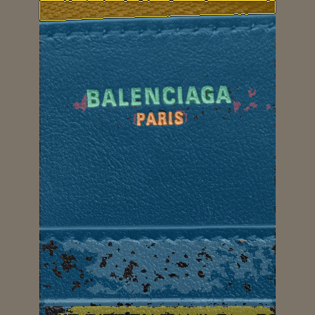
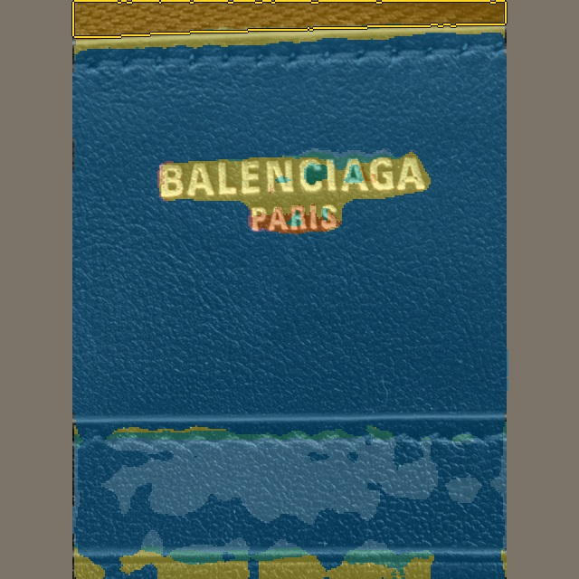
Mean clothing IoU change +0.301. Highlighted region: 0.020 → 0.718.
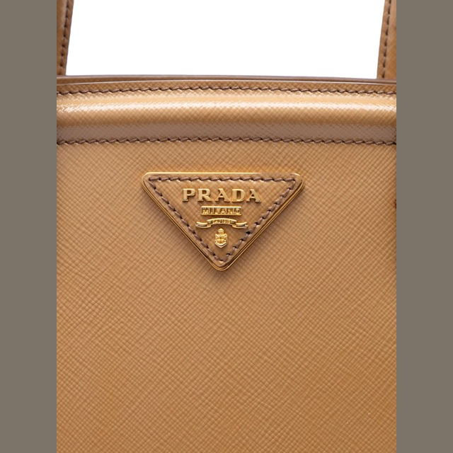
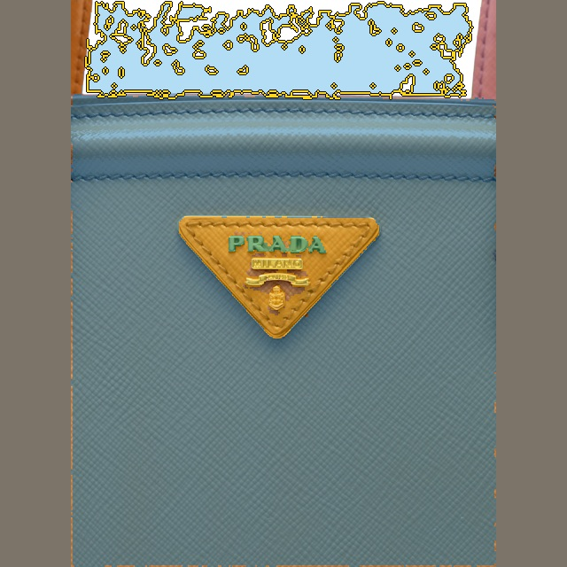
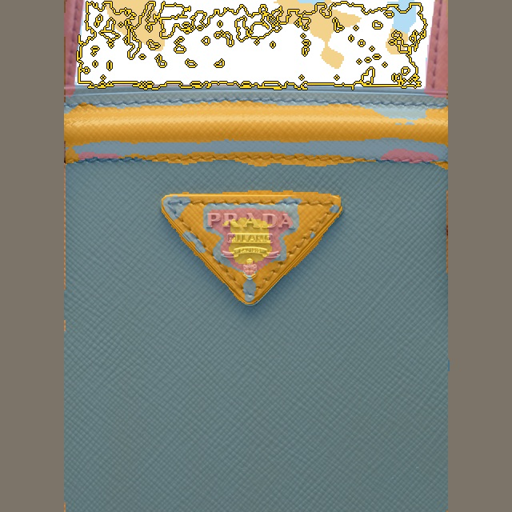
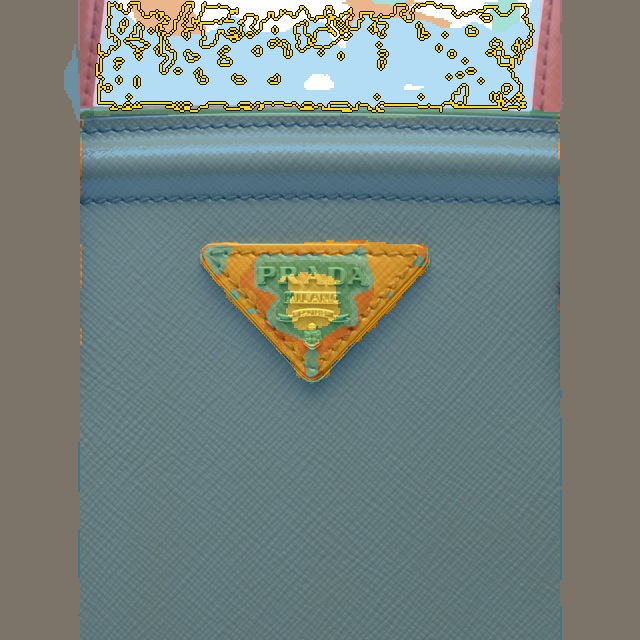
Mean clothing IoU change -0.346. Highlighted region: 0.676 → 0.003.


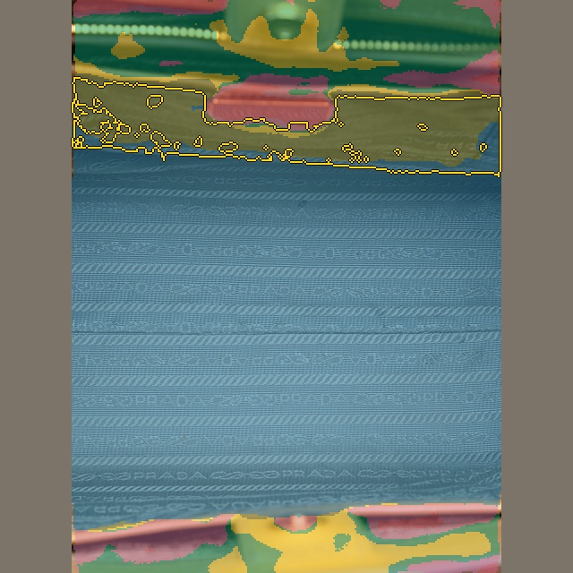
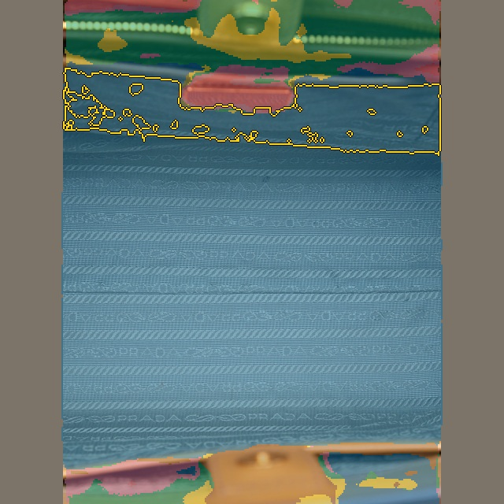
Mean clothing IoU change -0.222. Highlighted region: 0.222 → 0.001.
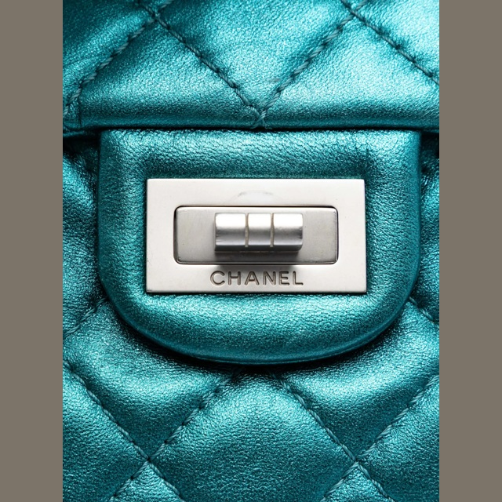


Mean clothing IoU change -0.220. Highlighted region: 0.434 → 0.214.
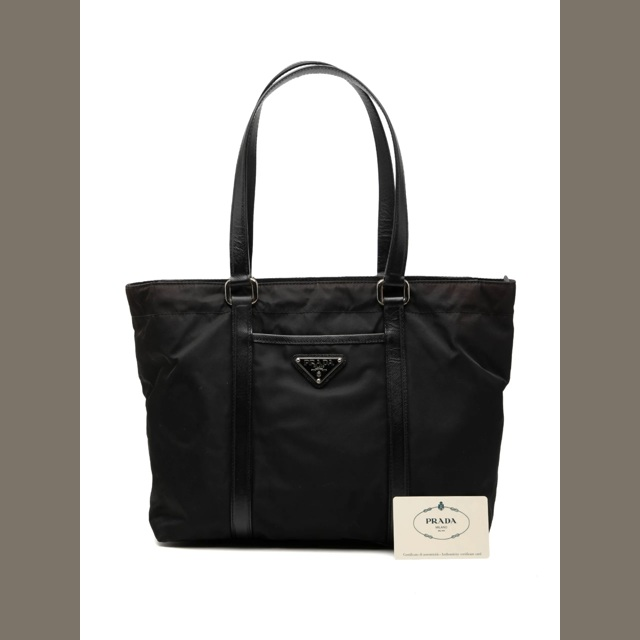
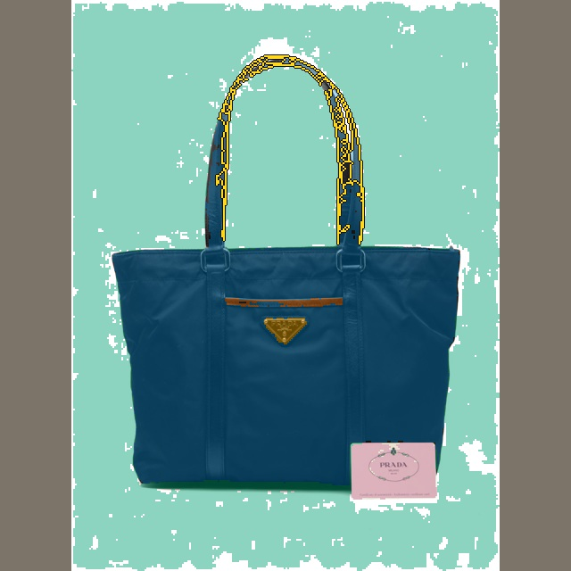
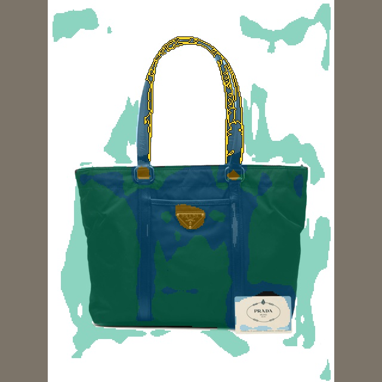
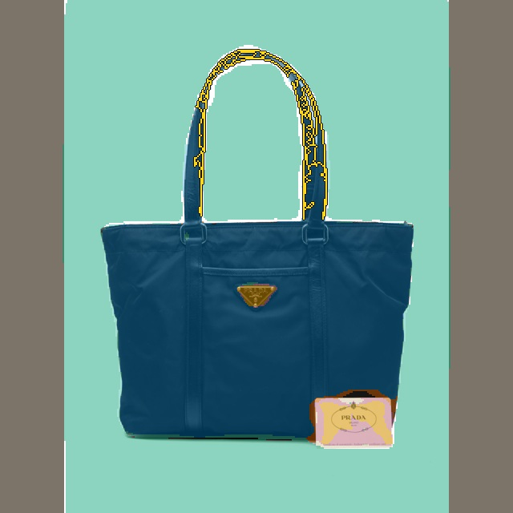
Accepted corrections are assigned in score order. Overlap is exclusive and previously predicted foreground cannot disappear. This guarantees partition bookkeeping, not correct garment boundaries. A confident bad correction can still fail, which is why the validation gates and all four hard cases are shown.
Teacher references changed to remove the faulty target composition. Scores here should be compared within this run, not directly against the earlier composite-target table.
TARGETS.json · INITIAL_ABSTENTION.json · TESTS.json · MODEL.json · NAMED_REFERENCE.json · BASELINE.json · FINAL.json · BENCHMARK.json · validation_residual.json · deadline.json · CODE.json · LOCAL_STARTED.json